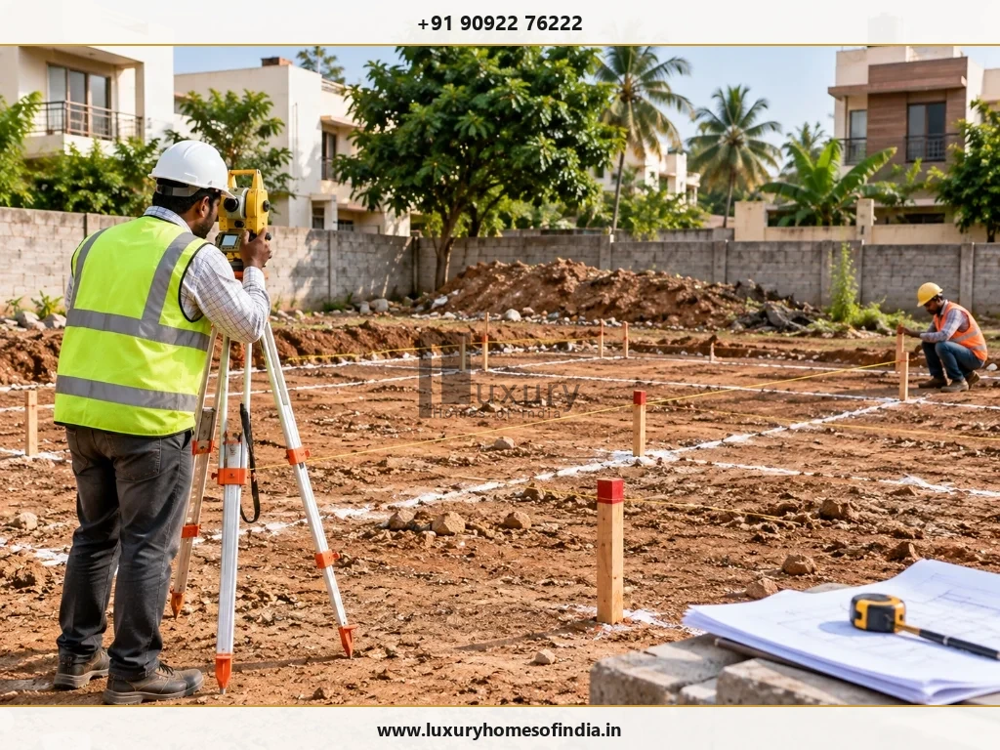
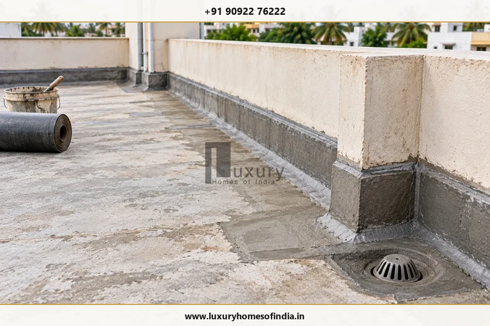
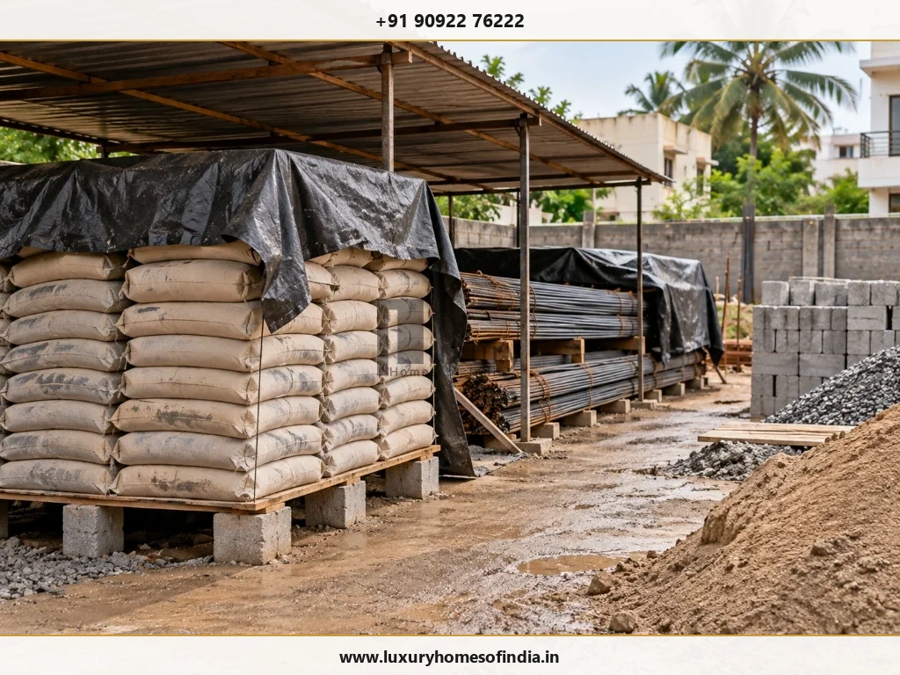

1. Which Is the Best Month to Start House Construction in Chennai?
For homeowners with flexibility, January to March is often worth considering for site preparation, excavation and foundation activities. This period follows Chennai's main north-east monsoon season, when rainfall and waterlogging can complicate some outdoor construction activities.
The Chennai Flood Monitoring System identifies November and December as important flood-risk months in the Chennai basin. Actual rainfall, however, varies by year and location. Read the Chennai Flood Monitoring System FAQ →
Use the following calendar as a planning guide, not a guarantee of suitable working conditions.
| Period | Planning Focus | What to Check |
|---|---|---|
| January–March | Site preparation and suitable foundation work | Soil condition, ground moisture, drainage and project readiness |
| April–May | Structural work and masonry where appropriate | Heat management, concrete curing, moisture retention and worker safety |
| June–September | Structural progress and protected internal activities | Rain forecasts, southwest monsoon showers, site access and runoff |
| October–December | Monsoon contingency planning and protected indoor work | Excavation stability, waterlogging, dewatering and weather-sensitive work |
The Practical Engineering Rule: Choose the earliest date when the project is properly prepared and the intended work can proceed safely. Do not start excavation simply because the calendar suggests a nominally favourable month.
2. Why January to March Can Be a Practical Starting Window
The period following the north-east monsoon can offer an opportunity to organise groundwork and foundation activities. Whether a particular plot is ready still depends on its actual condition.
Before beginning physical work, confirm that the following items are complete:
- Boundary verification: Site boundaries, building position and reference levels have been verified.
- Geotechnical design: Soil investigation and foundation design are available as required.
- Drawing coordination: Architectural and structural drawings are fully coordinated.
- Statutory permits: Applicable permissions and GCC/CMDA building approvals have been addressed.
- Site infrastructure: Excavation access and temporary drainage arrangements are planned.
- Supply chain: Structural materials, labour and inspection arrangements are organised.
A plot that experienced recent waterlogging may require further assessment before excavation. Removing standing water does not automatically establish that the soil is suitable for foundation construction.

3. Is April to June Suitable for House Construction?
Construction can continue during the hotter months when the work programme accounts for temperature, moisture management and worker safety.
April and May can bring challenging outdoor conditions. June may also bring rain associated with the southwest monsoon and local weather systems.
Coordinate the following activities with your architect, engineer and contractor:
- Concrete placement: Concrete placement, compaction and rigorous curing procedures.
- Structural hold-points: Reinforcement and formwork inspections prior to pours.
- Superstructure: Masonry and plastering under shaded protection where possible.
- Supply protection: Material storage and heat protection for bagged cement.
- Roofing: Roof preparation and waterproofing applications.
- Worker welfare: Safe working hours, drinking water, shade and rest arrangements.
Fresh concrete must be placed, protected and cured in accordance with the approved specifications and applicable technical requirements. The team should not rely on the month alone to decide whether conditions are suitable.
Ask Your Contractor Before Hot Weather Work:
What specific procedures will be used to protect fresh concrete from rapid plastic shrinkage, maintain wet curing for the mandatory 10–14 days, and manage worker safety during periods of high temperature?
4. Can You Start House Construction During the Monsoon?
Yes. Some activities can proceed during rainy periods, but each activity must be assessed according to site conditions, safety and technical requirements.
Chennai's north-east monsoon makes drainage, excavation stability, site access and the protection of unfinished work particularly important.
Activities that may continue when conditions are suitable:
- Architectural and structural design coordination.
- Procurement, vendor vetting, and material approvals.
- Indoor work in safely accessible, weatherproofed structures.
- Suitable electrical conduit running and plumbing installations.
- Internal finishing and joinery in areas protected from water ingress.
- Documentation, inspections, and quality-record reviews.
Activities that may require postponement or additional protection:
- Excavation in waterlogged, soft, or structurally unstable ground.
- Concrete placement without adequate overhead tarpaulin rain canopies.
- External plastering during active rainfall or high-humidity wet spells.
- Exterior painting on damp, un-cured, or unprepared surfaces.
- Waterproofing when the substrate moisture content or weather exceeds product tolerance.
Rain does not automatically stop every construction activity. The responsible site professional should decide whether a particular task can proceed safely and meet the required quality standards.
5. Month-by-Month House Construction Planning in Chennai
Use this calendar to coordinate preparation, weather monitoring and work sequencing. It is illustrative; it is not a fixed construction programme or a promise of completion.
| Month | Recommended Planning Focus |
|---|---|
| January | Verify site readiness; undertake suitable setting-out, site clearing, soil investigation, and foundation groundwork. |
| February | Coordinate foundation casting, plinth beam construction, backfilling, compaction, and early ground-floor structural work. |
| March | Review structural framework progress (columns and intermediate floor slabs) and upcoming long-lead material requirements. |
| April | Plan heat management, early-morning or evening concrete pours, shade covers, and continuous wet curing for structural elements. |
| May | Monitor worker safety, heat hydration, moisture loss, and secure shaded material storage for cement and chemical additives. |
| June | Review rainfall forecasts for early southwest monsoon showers and prepare site runoff channels and sump pumping systems. |
| July | Coordinate structural casting and weather-protected internal masonry activities around local weather windows. |
| August | Monitor site access routes, surface runoff, moisture exposure in storage sheds, and internal concealed MEP routing. |
| September | Review northeast monsoon contingencies, check site drainage gradients, clean silt pits, and protect all exposed masonry. |
| October | Monitor meteorological forecasts closely, halt deep unsupported excavations, and reassess exposed work before proceeding. |
| November | Give priority attention to site dewatering, flood mitigation, perimeter trench safety, and protected internal trade work. |
| December | Continue suitable weather-protected internal activities, audit post-rain soil stability, and reassess outdoor civil work as skies clear. |
The schedule should be tailored to the building design, number of floors, foundation system, material lead times and actual weather. A project with completed drawings and organised procurement may be better prepared than one starting during a nominally favourable month without these essentials.
6. What Should Be Checked Before Foundation Work?
Foundation work should begin only when the project is technically ready and site conditions are suitable.
Pre-Foundation Technical Checklist
- Confirm applicable permissions and approved architectural/structural sanction plans.
- Complete the necessary geotechnical soil investigation and engineer-certified foundation design.
- Verify plot boundaries, building setbacks, position and permanent site benchmark levels.
- Coordinate excavation plant access and temporary surface drainage routes.
- Plan how rainwater runoff and groundwater will be dewatered and safely discharged.
- Confirm the on-site availability of reinforcement steel, cement, aggregates, and shuttering materials.
- Agree on formal inspection hold-points, concrete cube testing, and quality-record procedures.
If water collects in an excavation, the team should assess ground conditions and excavation stability before continuing. Pumping out water alone does not prove that the founding soil remains suitable.
Engineering Rule: Foundation design and responses to unexpected ground conditions or high groundwater must be reviewed and certified by the responsible structural engineer.
7. When Is the Best Time for Concrete and Structural Work?
Concrete and structural work can take place throughout the year if the construction team can meet the specified technical, safety and quality requirements.
Before each concrete pour, the team should:
- Confirm the approved concrete mix design and structural reinforcement details.
- Inspect formwork shuttering stability, rebar placement, cover blocks, and embedded items.
- Check batching equipment, concrete pump access, vibration needles, and material availability.
- Prepare suitable protection (e.g., waterproof tarpaulins or curing burlap) against foreseeable weather.
- Confirm placement, compaction, finishing, and specified curing arrangements.
- Maintain required pre-pour inspection checklists and cast standard concrete test cubes.
If rain is expected, the contractor should assess whether the pour can be completed and protected appropriately. Heat, rainfall, water addition, placement and curing must be managed according to the specified procedures.
Quality Insight: Season vs. Workmanship
Selecting an ideal calendar month cannot compensate for substandard materials, poor workmanship, inadequate vibration compaction, or deficient curing practices.
8. When Should Waterproofing, Painting and Exterior Finishes Be Scheduled?
Finishing work should be planned around substrate readiness, product instructions and the conditions required for correct application.

Waterproofing
Coordinate terrace, balcony and bathroom waterproofing with the required substrate preparation, drainage details, application conditions and testing procedures. Ensure outlets, slopes, and parapet coving fillets are coordinated with the architectural design before membrane or chemical coatings are applied.
External Plastering
Protect fresh plaster from unsuitable weather and follow the specified curing requirements. Heavy rain during vulnerable setting stages can wash away cement binder and damage unfinished work.
Exterior Painting
Proceed only when surface preparation, moisture conditions and ambient weather meet the coating manufacturer's requirements. High moisture trapped behind exterior acrylic paint will cause blistering, peeling, and efflorescence.
Driveways and Landscaping
Coordinate exposed external works with drainage, soil conditions and construction access. Schedule these activities toward the end of the project to reduce damage from ongoing heavy material deliveries and site vehicle traffic.
9. How Chennai's Climate Should Influence Your Construction Plan
Seasonal timing is only one factor. The specific plot and building design also influence the construction programme.
Consider these core climate factors:
- Rainfall and waterlogging: Review the property's history of waterlogging and the surrounding access conditions. Plan temporary drainage, site levels and safe water management before excavation.
- Soil and groundwater: Soil characteristics (such as coastal sandy layers, alluvial deposits, or expansive black cotton clay) and groundwater tables affect foundation design and excavation management. Obtain project-specific geotechnical reports rather than assuming adjacent plots share identical soil bearing capacities.
- Heat and curing: Hot conditions in April and May accelerate moisture evaporation from fresh concrete. The site team must execute ponding or continuous burlap wetting to prevent thermal cracking.
- Coastal exposure: Properties located along ECR, OMR, or coastal belts experience saline marine breezes. The structural design must specify higher concrete cover, corrosion-resistant rebar (such as epoxy-coated or CRS steel), and marine-grade exterior finishes.
- Material storage: Store cement, reinforcement, timber, electrical products and finishing materials according to manufacturer guidelines. Poor storage and rain exposure can compromise materials before installation.

10. What If You Need to Start During October to December?
If your project must begin during Chennai's north-east monsoon, focus on readiness, risk management and realistic scheduling.
Before work begins:
- Verify building permissions and complete all multidisciplinary design coordination.
- Confirm soil investigation findings and final foundation structural drawings.
- Assess access roads for heavy transit mixers and identify low-lying waterlogging risks.
- Plan temporary perimeter drainage channels, sump pits, and pump discharge lines.
- Construct waterproof material storage sheds with elevated timber platforms.
- Establish strict technical criteria for stopping concrete placement during heavy cloudbursts.
- Include adequate weather-contingency buffers in the construction programme.
If outdoor groundwork is temporarily unsuitable, use the time for productive activities that can safely proceed, such as procurement contracts, vendor selection, modular kitchen design, and plumbing fixture approvals.
A delayed start to physical construction may be preferable to rushing into unsafe excavation or poorly controlled concrete placement.
11. How to Choose the Right Start Date for Your House
Before committing to a construction date, review these items with your project team.
Master Start-Date Readiness Checklist
- Budget and project scope are agreed in writing.
- Relevant property title and survey documents have been reviewed.
- Soil investigation and foundation design are complete as required.
- Architectural and structural working drawings are fully coordinated.
- Applicable civic permissions and building permits have been addressed.
- The builder's scope, contract and milestone payment terms are signed.
- Site access, electricity, water, and temporary drainage are ready.
- Key materials, batching plants, and suppliers are identified.
- Weather-sensitive activities are clearly tagged in the programme.
- Reasonable monsoon and seasonal contingency time is factored in.
- Quality inspections and reporting protocols are formally agreed.
The right start date is the earliest date when the project is prepared and the intended work can proceed safely under prevailing site and weather conditions.
Frequently Asked Questions
January to March can be a practical period for site preparation and foundation work, provided the plot is suitable, the project is ready and actual weather conditions permit the work.
It can be suitable, but the excavation area, founding soil, drainage and groundwater conditions must be assessed. Foundation drawings and applicable permissions should also be ready.
Yes. Construction can proceed when the team appropriately manages heat, worker safety, concrete curing, material storage and the technical requirements of each activity.
The decision depends on rainfall, soil conditions, drainage and excavation safety. Waterlogged or unstable ground must be assessed before work proceeds.
Rain can affect fresh concrete if it alters the mix, contaminates the surface or interferes with placement and finishing. Appropriate protection, quality controls and curing procedures are essential.
Complete design coordination and procurement planning early, arrange temporary drainage, protect materials and include contingency time for weather-sensitive work.
Plan Your House Construction with a Clear Project Schedule
Planning an independent house or luxury villa involves more than selecting a month. Design coordination, engineering, procurement, site preparation and quality management all influence when physical construction should begin.
Luxury Homes of India can be considered for residential construction-related planning and execution requirements, subject to verification of the relevant service scope. Discuss your plot, design requirements, project scope and intended schedule before finalising a construction start date.
Explore our services and portfolio:
- Explore LHI Civil Engineering & Construction
- View the LHI Project Gallery
- Contact Luxury Homes of India
Registered Office: #85, 4th Floor, Lotus Tower, Guindy, Chennai – 600032
Phone: +91 90922 76222 | Email: info@luxuryhomesofindia.in
Disclaimer: This article is for general educational purposes. Weather patterns vary from year to year. Construction decisions should be based on actual site conditions, project-specific engineering advice, applicable permissions and current weather forecasts.